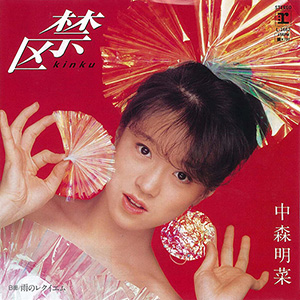

单曲：第6张
发行年份：1983年
发行日期：9月7日
| 歌名 | 作词 | 作曲 | 编曲 |
|---|---|---|---|
| 禁区 | 売野雅勇 | 細野晴臣 | 細野晴臣・萩田光雄 |
| 雨のレクイエム | 芹沢類 | 玉置浩二 | 萩田光雄 |
首发规格：黑胶 EP: L-1662
唱片公司：Reprise Records，Warner Pioneer
排行榜：
Oricon公信榜单曲周榜第1位，1983年度榜第17位
TBS The Best Ten音乐节目第1位（共7周），1983年度第10位
日本电视台The Top10音乐节目第1位
获奖：
第10回横浜音楽祭 横浜音楽祭賞
第9回全日本歌謡音楽祭 専門審査員賞
第14回日本歌謡大賞 放送音楽賞
第25回日本唱片大賞 金偶像賞、金偶像特別賞（TBS賞）
第16回日本有線大賞 有線音楽賞、最多点播歌手賞
第16回全日本有線放送大賞 優秀明星賞、読売电视最優秀賞
专辑首入：BEST AKINA メモワール
再发行：
1988年7月25日 - 8cmCD: 10SL-135
1988年12月21日 - CT: 10L5-4045
1998年11月26日 - 12cmCD: WPC6-8663
2008年11月12日 - 数码下载
2014年6月18日 - 收入1982-1991单曲合集CD套装
2021年6月9日 - 收入1982-1991单曲合集黑胶套装